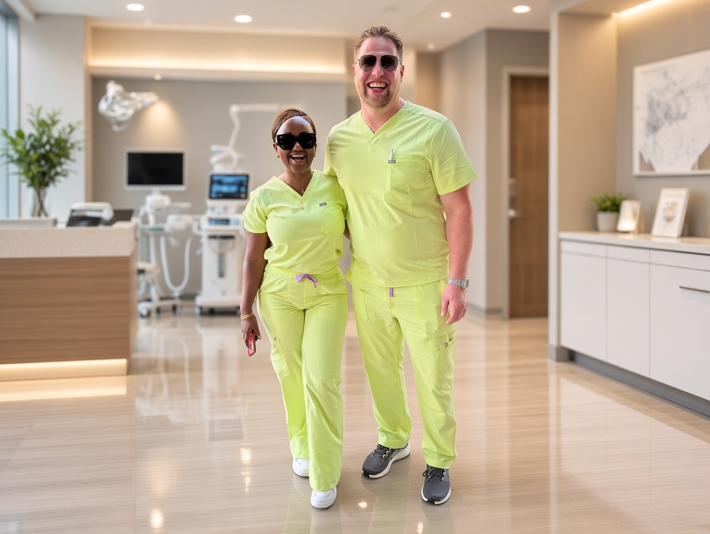

Senior Care
Personalized support for older adults, provided with care and respect in the comfort of home.
Learn more →Divine Moonlight Home Service LLC provides personalized home services and senior support for families throughout Wake, Durham, and Orange Counties.
Explore our services →Whether it’s help with daily routines, specialized senior care, or support from a licensed nurse, Divine Moonlight Home Service LLC provides the care families need in the comfort of home.
Personalized support for older adults, provided with care and respect in the comfort of home.
Learn more →Helping individuals living with dementia or Alzheimer’s navigate the unique challenges of memory loss with compassionate, personalized support.
Learn more →Personalized support for individuals living with Parkinson’s, with an emphasis on comfort, independence, and everyday routines.
Learn more →Care provided by our team of registered nurses (RN), licensed practical nurses (LPN), and certified nursing assistants (CNA).
Learn more →A helping hand around the house with everyday cleaning and tidying.
Learn more →Assistance with planning and preparing meals based on individual preferences and everyday needs.
Learn more →Support with everyday errands and essential tasks that keep a household running.
Learn more →Dependable transportation to and from medical appointments.
Learn more →At Divine Moonlight Home Service LLC, our mission is to provide compassionate, personalized, and professional care that promotes dignity, comfort, independence, joy, and the best possible quality of life.
We take the time to truly know your loved one, understand their unique needs, and become a trusted extension of your family.
Learn About Our Mission→When you welcome us into your home, your loved one is cared for with the warmth, patience, and compassion of family.
CROWN YOUR GOLDEN YEARSDivine Moonlight was built from a desire to make home care feel personal. Behind the company are people who believe that caring for a loved one means showing up with patience, respect, compassion, and professionalism.
Tobby brings experience as a former Army medic and Certified Nursing Assistant (CNA) to Divine Moonlight. His background in medical care has included working with individuals facing serious and complex care needs, including stroke and memory-care situations. He is currently working toward becoming a Registered Nurse (RN).
That experience shapes the way he approaches home care: with patience, dignity, compassion, and a genuine commitment to the people and families being served.
“Crowning your golden years” means treating every person with the respect they deserve.

Josephine brings a background in entrepreneurship and enterprise education, along with experience as an administrative assistant at UNC. She has around three years of caregiving experience and has worked as a CNA, including privately managing clients and coordinating care teams while providing hands-on care.
Her experience and vision help shape Divine Moonlight around compassionate, dignified care that is personal, organized, and centered on the needs of each family.
Your experience matters. When you are ready, we would be honored to hear how care at home has gone — and to share genuine stories from families here, never invented ones.
Reach out and share a little about your situation for yourself, a parent, or someone you love.
We evaluate your situation and present a clear, structured plan with a fixed price.
You share your preferred days and times, and we confirm the booking.
Once you select your preferred caregiver from our team of experts, the process is complete.